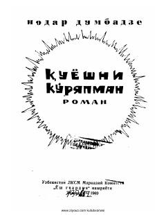

QKIkkinchi jahon urushi davridagi qishloq hayoti va insoniy kechinmalar haqidagi ta'sirli roman.
Ushbu roman gruzin yozuvchisi Nodar Dumbadzening ikkinchi yirik asari bo'lib, unda Ikkinchi jahon urushi yillaridagi qishloq hayoti va yoshlarning taqdiri tasvirlanadi. Asar urush davrining mashaqqatlari, qayg'uli va quvonchli damlarini o'zida mujassam etgan.